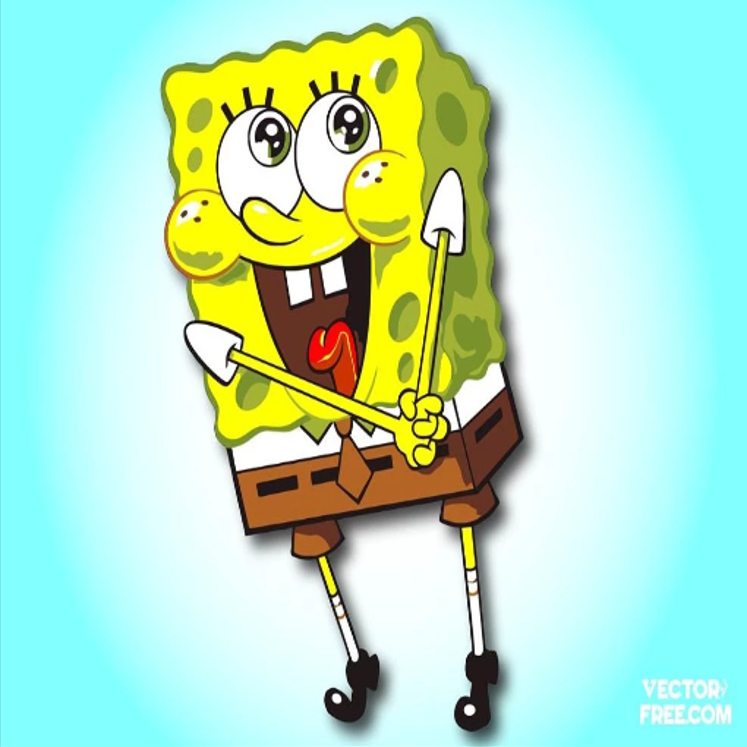

BOB ESPONJA, CALÇA QUADRADA
Você pode ser o que você quiser se tiver imaginação!

PERSONAGENS DO BOB ESPONJA:
Bob Esponja: Personagem principal
Sr. Sirigueijo:
é o dono do Siri Cascudo, bem como o empregador ambos de Bob e Lula Molusco.
Lula Molusco:
é o antipatico vizinho do Bob, apesar do nome Lula é um polvo.
Plankton e Karen:
são os proprietários do Balde de Lixo. Plankton é o maior rival de Sr. Sirigueijo.
Sandy:
é um esquilo que vem do Texas e mora na Fenda do Biquíni.
Senhora Puff:
é uma fêmea de baiacu que aulas de pilotagem na Fenda do Biquíni.
Pérola:
é uma baleia adolescente e filha do Sr. Sirigueijo.
Gary:
é o caracol de estimação do Bob Esponja.
Para assistir um episódio Clique aqui